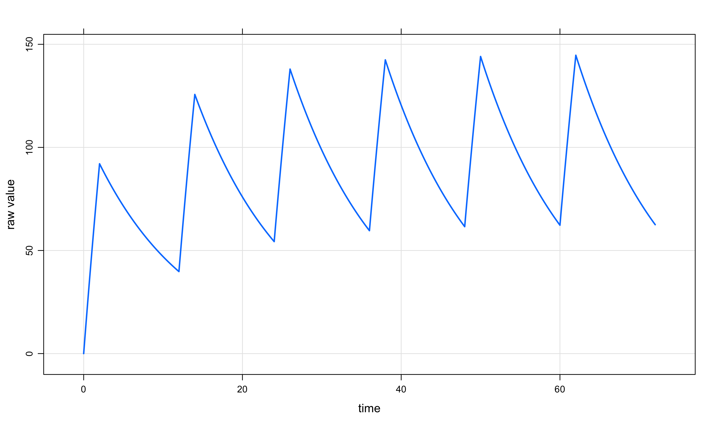
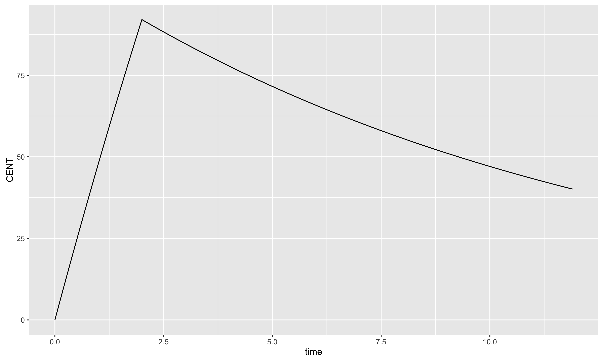
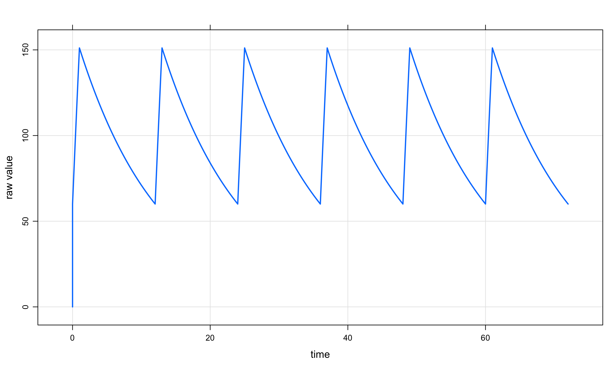
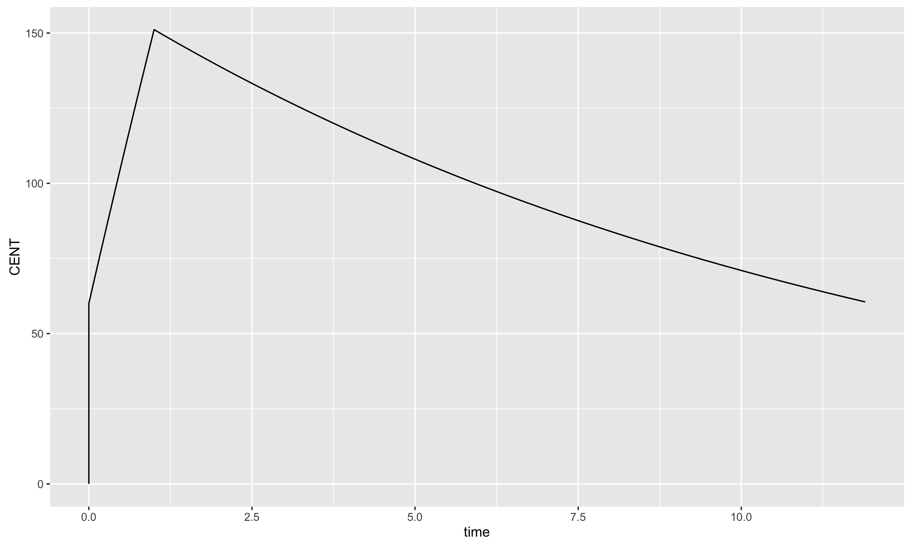
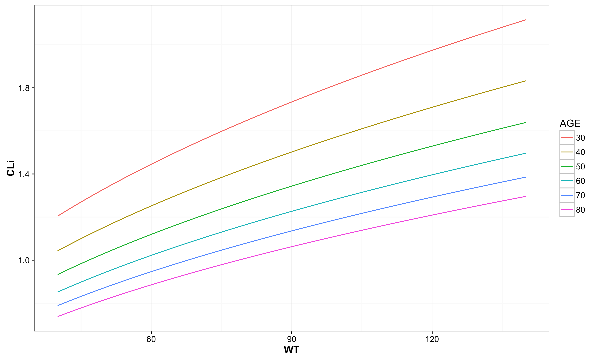

Chapter 3 One Compartment Examples
# required libraries
library("PKPDmisc")
library("knitr")
library("mrgsolve")
library("ggplot2")
library("dplyr")opts_chunk$set(fig.height = 6, fig.width = 10, dpi = 300)3.1 One compartment IV
3.1.1 basic IV
code <- '
$PARAM CL= 1.2, VC=14.3
$CMT GUT CENT
$ADVAN2
$MAIN
pred_CL = CL;
pred_V = VC;
'
model <- mread(code=code, project="compiled_code", model="onecmpt_simple")## Using ADVAN2## Compiling onecmpt_simple.cpp.cpp ...## done.## Loading: onecmpt_simple40ff68582a58.soe <- ev(amt=100,rate=50,ii=12, addl=5, cmt=2)
one_cmpt_iv_basic <- model %>% ev(e) %>%
Req(CENT) %>% mrgsim(end=72,delta=0.1,digits=5)Data can be extracted using the @data attribute
one_cmpt_iv_basic@data %>%
as.data.frame %>%
head %>%
kable| ID | time | CENT |
|---|---|---|
| 1 | 0.0 | 0.0000 |
| 1 | 0.0 | 0.0000 |
| 1 | 0.1 | 4.9791 |
| 1 | 0.2 | 9.9166 |
| 1 | 0.3 | 14.8130 |
| 1 | 0.4 | 19.6680 |
output from mrgsolve has an inbuilt plot method:
plot(one_cmpt_iv_basic) 
When filtering, the result is a dataframe, so the plot method will no longer work, and instead it is ideal to turn to ggplot.
one_cmpt_iv_basic %>% filter(time < 12) %>%
ggplot(aes(x = time, y = CENT)) + geom_line()
3.1.1.1 Infusion at Steady State
ev understands ss=1 as an option
e <- ev(amt=100,rate=100,ii=12, addl=5, cmt=2,ss=1)
one_cmpt_iv_basic_ss <- model %>% ev(e) %>%
Req(CENT) %>% mrgsim(end=72,delta=0.1,digits=5)one_cmpt_iv_basic_ss@data %>%
as.data.frame %>%
head %>%
kable| ID | time | CENT |
|---|---|---|
| 1 | 0.0 | 0.000 |
| 1 | 0.0 | 60.043 |
| 1 | 0.1 | 69.499 |
| 1 | 0.2 | 78.876 |
| 1 | 0.3 | 88.176 |
| 1 | 0.4 | 97.397 |
plot(one_cmpt_iv_basic_ss) 
one_cmpt_iv_basic_ss %>% filter(time < 12) %>%
ggplot(aes(x = time, y = CENT)) + geom_line()
3.1.1.2 capture individual parameter values
one_cmpt_iv <- '
$PARAM TVCL= 1.2, TVVC= 14.3 , WT=70, AGE=50
$CMT GUT CENT
$ADVAN2
$MAIN
double CLi = TVCL*pow(WT/70,0.45)*pow(AGE/50,-0.5);
double Vi = TVVC*(WT/65);
pred_CL = TVCL;
pred_V = TVVC;
$CAPTURE CLi Vi WT AGE
'
model <- mread( model="onecmpt",
project="compiled_code",
code=one_cmpt_iv)## Using ADVAN2## Compiling onecmpt.cpp.cpp ...## done.## Loading: onecmpt40ff2d15c84e.soidata <- expand.idata(WT=seq(40,140),AGE=seq(30,80,10))
out <- model %>%
idata_set(idata) %>%
mrgsim(end=-1)out@data %>% as.data.frame %>% head %>% kable| ID | time | GUT | CENT | AGE | CLi | Vi | WT |
|---|---|---|---|---|---|---|---|
| 1 | 0 | 0 | 0 | 30 | 1.204311 | 8.80 | 40 |
| 2 | 0 | 0 | 0 | 30 | 1.217767 | 9.02 | 41 |
| 3 | 0 | 0 | 0 | 30 | 1.231044 | 9.24 | 42 |
| 4 | 0 | 0 | 0 | 30 | 1.244149 | 9.46 | 43 |
| 5 | 0 | 0 | 0 | 30 | 1.257087 | 9.68 | 44 |
| 6 | 0 | 0 | 0 | 30 | 1.269864 | 9.90 | 45 |
out@data %>% as.data.frame %>%
mutate(AGE = factor(AGE)) %>%
ggplot(aes(x = WT, y = CLi, color = AGE)) +
geom_line() + theme_bw() + base_theme()
devtools::session_info()## Session info --------------------------------------------------------------## setting value
## version R version 3.2.3 (2015-12-10)
## system x86_64, darwin15.3.0
## ui unknown
## language (EN)
## collate en_US.UTF-8
## tz America/New_York
## date 2016-03-24## Packages ------------------------------------------------------------------## package * version date source
## assertthat 0.1 2013-12-06 CRAN (R 3.2.3)
## bookdown 0.0.53 2016-03-24 Github (rstudio/bookdown@13fbd43)
## colorspace 1.2-6 2015-03-11 CRAN (R 3.2.3)
## DBI 0.3.1 2014-09-24 CRAN (R 3.2.3)
## devtools 1.10.0 2016-01-23 CRAN (R 3.2.3)
## digest 0.6.9 2016-01-08 CRAN (R 3.2.3)
## dplyr * 0.4.3 2015-09-01 CRAN (R 3.2.3)
## evaluate 0.8.3 2016-03-05 CRAN (R 3.2.3)
## formatR 1.3 2016-03-05 CRAN (R 3.2.3)
## ggplot2 * 2.1.0 2016-03-01 CRAN (R 3.2.3)
## gtable 0.2.0 2016-02-26 CRAN (R 3.2.3)
## highr 0.5.1 2015-09-18 CRAN (R 3.2.3)
## htmltools 0.3.5 2016-03-21 CRAN (R 3.2.3)
## httpuv 1.3.3 2015-08-04 CRAN (R 3.2.3)
## knitr * 1.12.3 2016-01-22 CRAN (R 3.2.3)
## labeling 0.3 2014-08-23 CRAN (R 3.2.3)
## lattice 0.20-33 2015-07-14 CRAN (R 3.2.3)
## lazyeval 0.1.10 2015-01-02 CRAN (R 3.2.3)
## magrittr 1.5 2014-11-22 CRAN (R 3.2.3)
## memoise 1.0.0 2016-01-29 CRAN (R 3.2.3)
## mime 0.4 2015-09-03 CRAN (R 3.2.3)
## miniUI 0.1.1 2016-01-15 CRAN (R 3.2.3)
## mrgsolve * 0.5.11 2016-03-02 local
## munsell 0.4.3 2016-02-13 CRAN (R 3.2.3)
## PKPDmisc * 0.4.0 2016-03-02 Github (dpastoor/PKPDmisc@794a150)
## plyr 1.8.3 2015-06-12 CRAN (R 3.2.3)
## R6 2.1.2 2016-01-26 CRAN (R 3.2.3)
## Rcpp 0.12.3 2016-01-10 CRAN (R 3.2.3)
## rmarkdown 0.9.5 2016-02-22 CRAN (R 3.2.3)
## scales 0.4.0 2016-02-26 CRAN (R 3.2.3)
## shiny 0.13.1 2016-02-17 CRAN (R 3.2.3)
## stringi 1.0-1 2015-10-22 CRAN (R 3.2.3)
## stringr 1.0.0 2015-04-30 CRAN (R 3.2.3)
## xtable 1.8-2 2016-02-05 CRAN (R 3.2.3)
## yaml 2.1.13 2014-06-12 CRAN (R 3.2.3)